Sword is one of the currently 15 Phighters available to play in game.
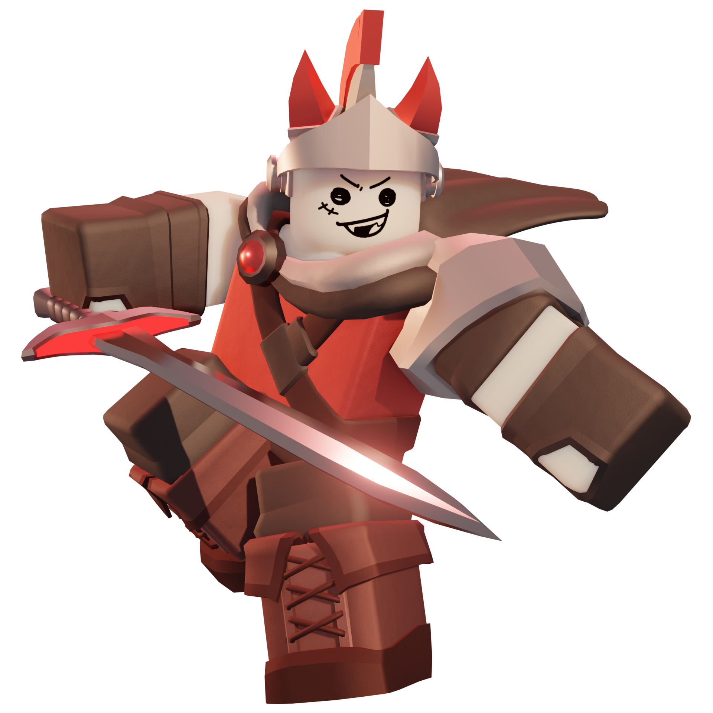
Below is art made by Sodakettle of Sword.
Katana is one of the currently 15 Phighters available to play in game.
Katana spawned in Lost Temple, spawning unnaturally and growing up with his two caretakers and sibling. Later on, once the scorch occured Katana went with Father Overseer and joined the Church Of The True eye. While Katana was at the church with his sibling, they were betrayed and kicked out. Katana left to Theives Den, later joining the Darkage clan and having the goal to erase the world of the corrupted.
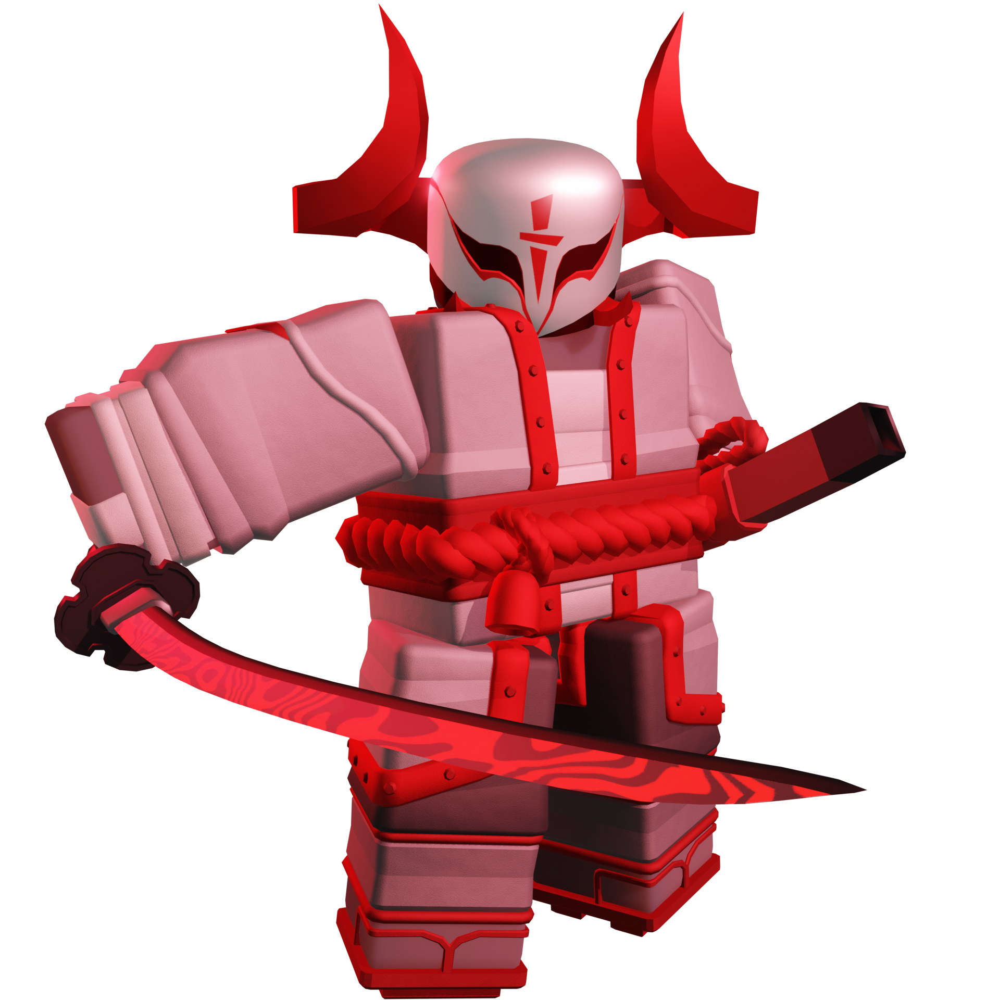
Below is art made by Sodakettle of Katana.
Banhammer is one of the currently 15 Phighters available to play in game.
Banhammer is a demideity, he is a child of Windforce. Banhammer is an unnatural spawn, and Banhammer is the second demi-deity to ever spawn. Banhammer followed after his cousin, the child of Firebrand, who was his closest friend. Six years before Phighting, Banhammer was appointed as the Warden of Banlands, a facility meant to correct Inphernals and it was made by Firebrand. When Firebrand disappeared, Windforce took over but then left it to Banhammer who took it with pride. Banhammer oversees the main island and smaller police forces stationed in Crossroads. Many hate Banhammer for being a tyrant and being related to the Sword Deities. Banhammer has signifcantly more strength than the average Inphernal, he has an indefinite lifespan and he willingly wears a blindfold to challenge himself against other Inphernals. Banhammer has two sets of eyes like Windforce and wings like Windforce's own that he can summon and desummon as he pleases. Banhammer is not aligned with any factions, prefering to keep to his own. Banhammer and Scythe have a longstanding rivalry that's mainly one-sided.
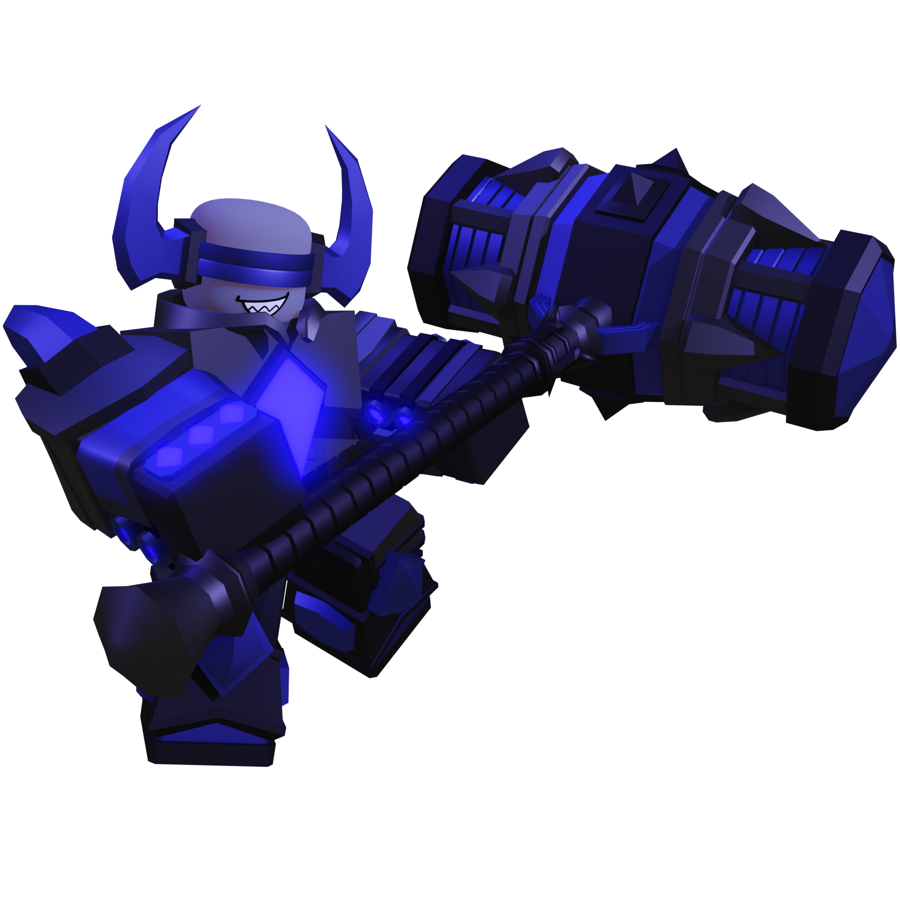
Below is art made by Sodakettle of Banhammer.
Skateboard is one of the currently 15 Phighters available to play in game.
Skateboard is from Playground, part of the trio with Coil and Boombox. Skateboard spawned in Splintered Skies, Windforce's domain. Skateboard met Boombox up in Splintered Skies, but Skateboard was not accepted into the kingdom and thrown off the island. Boombox followed Skateboard, and they became best friends in the process. Skateboard now lives in Craterdust, usually rescuing other Inphernals from the unstable architecture and Skateboard considers himself factionless despite Craterdust being part of Playground. Skateboard is a close friend of Coil and a friend of Slingshot.
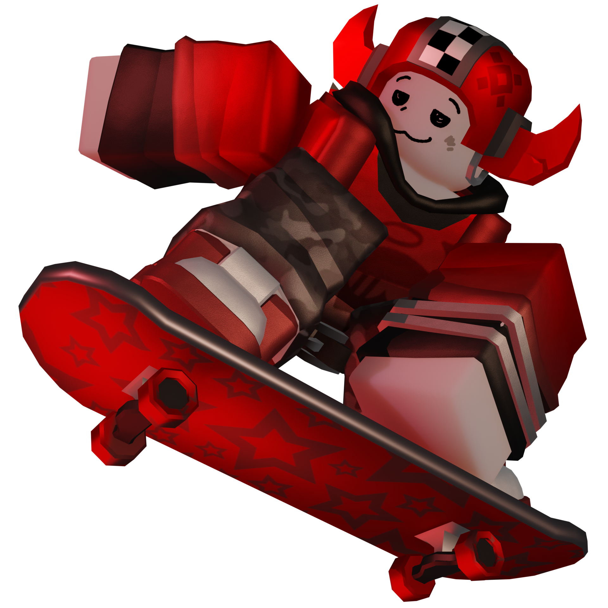
Below is art made by Sodakettle of Skateboard.
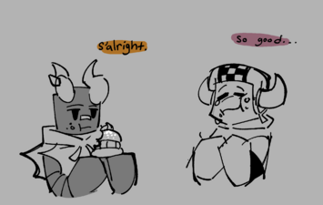
Biograft is one of the currently 15 Phighters available to play in game.
Biografts are made in Blackrock, and they run the majority of Blackrock including the military. Biografts were invented by Subspace T. Mine, so Biografts refer to Subspace as Creator in-game. There are multiple models, such as Zetagrafts and Betagrafts. The ones in game are simply Biografts.
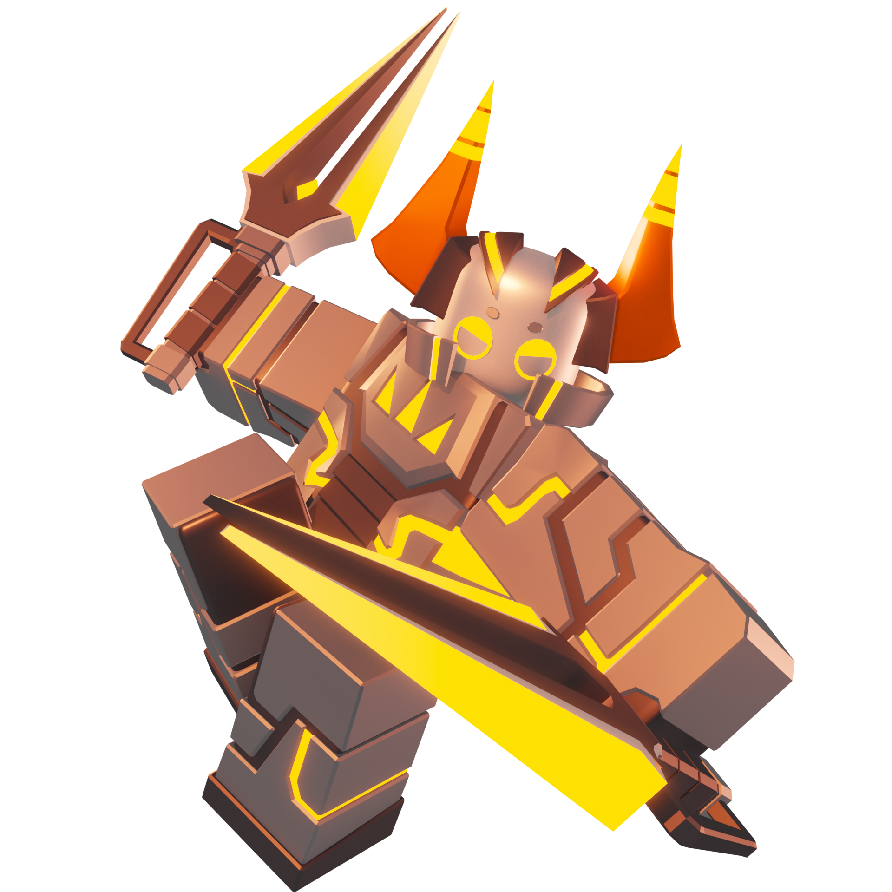
Below is art made by Sodakettle of Biograft.
Shuriken is one of the currently 15 Phighters available to play in game.
Shuriken is part of the Phighters from Theives Den, and Shuriken was part of the Darkage Clan with Vinestaff and Slingshot. They later left for Crossroads, and now Shuriken works at Slingshot's cafe known as Theives Rest. Shuriken also stays up late, acting as a vigilante known as the Silver Shadow. Shuriken is also Vinestaff's sibling.
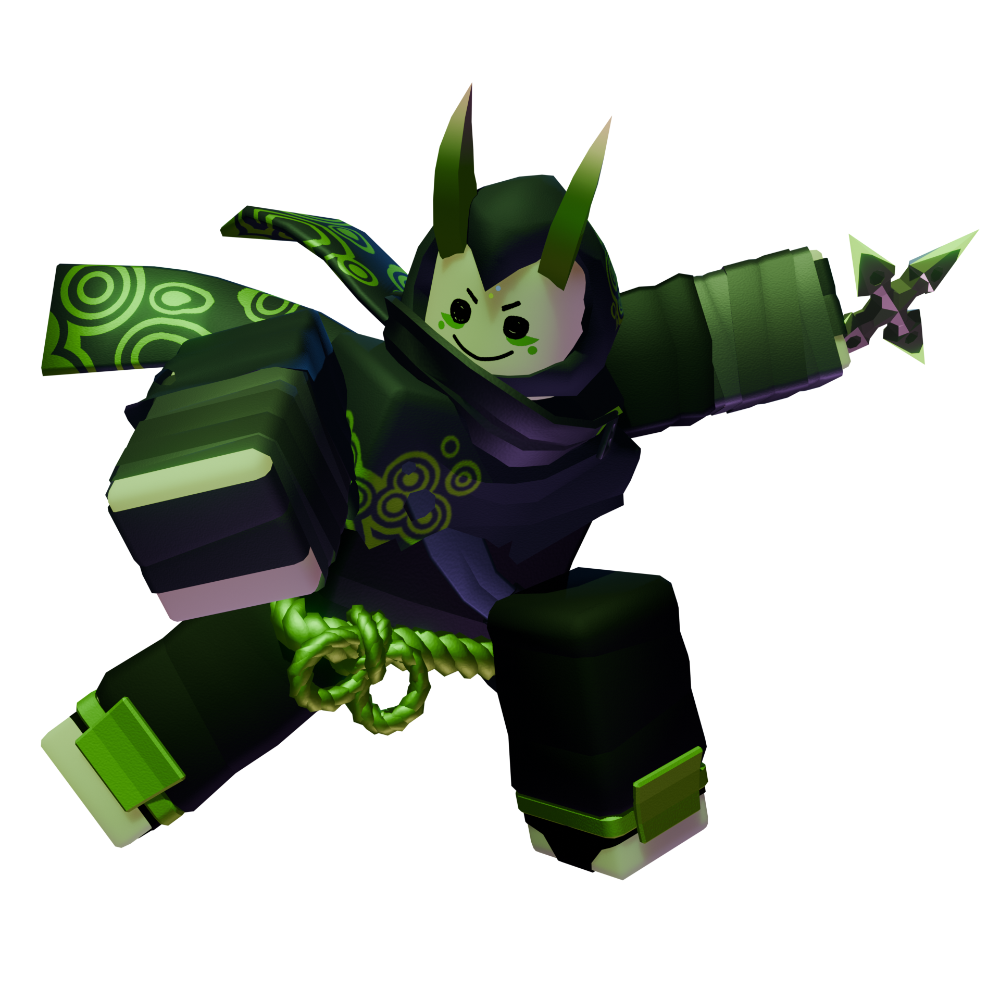
Below is art made by Sodakettle of Shuriken.
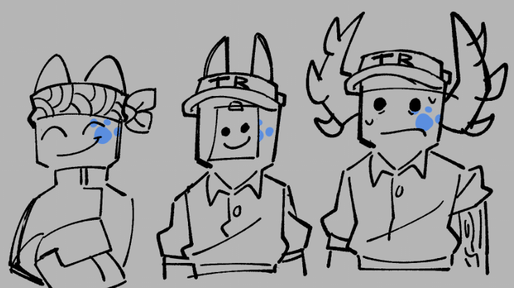
Scythe is one of the currently 15 Phighters available to play in game.
Scythe used to be one of the Redcliff Wranglers and Grappling Hook's significant other. However, when the Scorch happened, Scythe left the wranglers to join what is now The Church Of The True Eye. Scythe also lost her right arm in the event. Scythe is very loyal to the Church, she mostly works as a mob enforcer and she is commanded by Father Overseer. Scythe blindly follows the word of Father Overseer, but she still has complicated feelings about it. Despite this, Scythe is still highly respected and loved by her fellow Church members, she is seen as an older sibling figure the other members can bring their problems to. Having Medkit in the Church now, Scythe got her prosthetic arm from him and her gear has been modified to have a rifle mode instead of only being a green laser scythe, the gear she spawned with. As for Scythe's specialized scope on her eye, she wears it due to her missing eye. Scythe is missing her left eye due to the practices of the Church, and it is replaced by a glass eye. Since she has a missing eye, she has poor depth perception like Subspace. A fun fact, Scythe originally had black horns but they're painted teal to show her devotion.
Scythe also has a deadly reputation with the Banlands police and consistently evades capture. Scythe is very close with Broker, as well as an acquaintance with Medkit. Medkit and Broker both work under Scythe. Before Katana was forced out of the Church, Scythe was a friend.
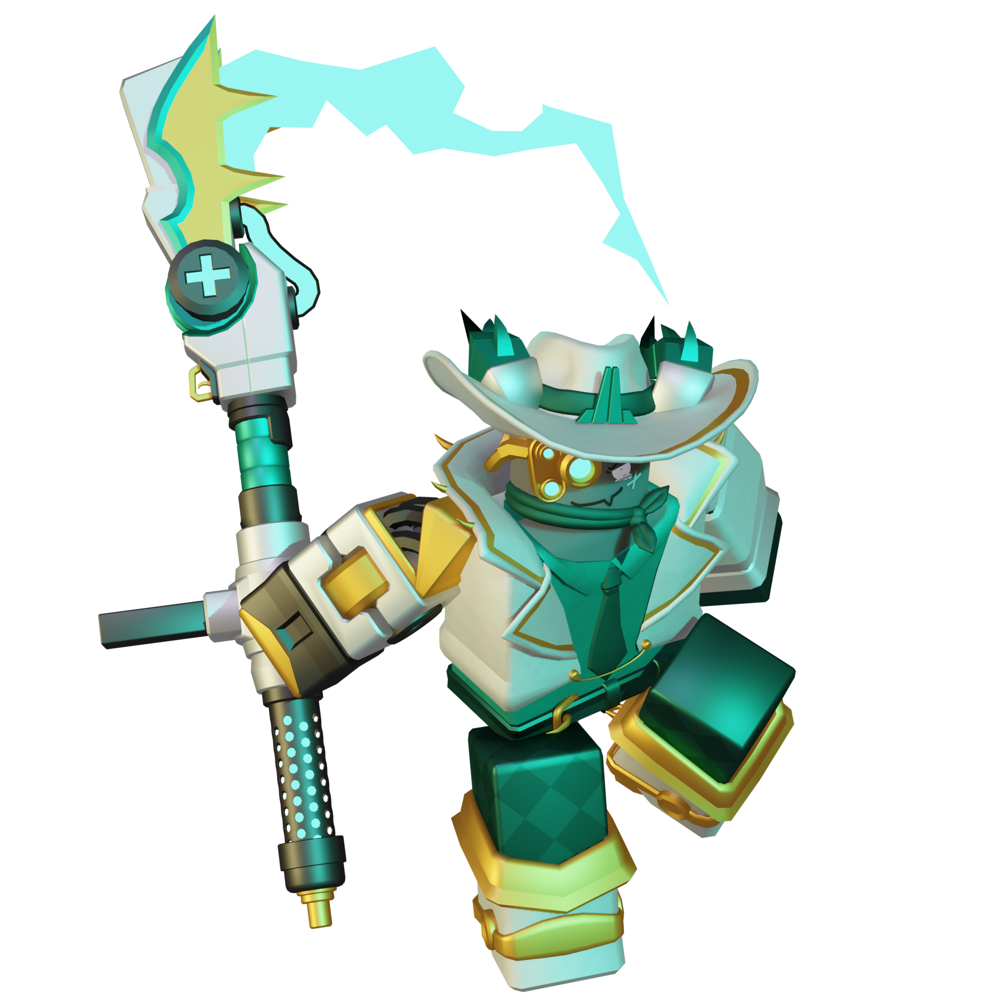
Below is art made by Sodakettle of Scythe.
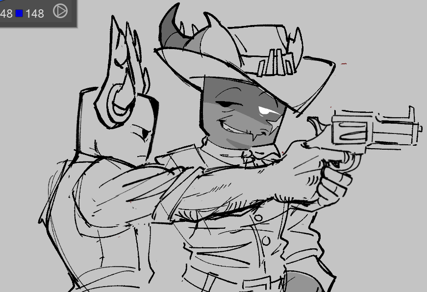
Hyperlaser is one of the currently 15 Phighters available to play in game.
Hyperlaser was spawned in Blackrock, and the Korblox Administration raised him to be a soldier in the military division. Hyperlaser works as a mercenary, taking on a variety of jobs such as being a body guard or assassinations. At some point in Hyperlaser's life, he got involved in an incident that nearly took his life. It left him with burn scars across his body, his horns left as stubs and he was legally blind. Subspace, Hyperlaser's contractor, designed Hyperlaser's signature helmet which allows him to see despite being legally blind. Hyperlaser is one of the few remaining soldiers that's alive, now living in District 4 of Blackrock with a pet cat known as Princess. Princess was found abandoned during one of Hyperlaser's missions in Crossroads. Hyperlaser also struggles to get close to other Inphernals, but recently has become familiar with Katana.
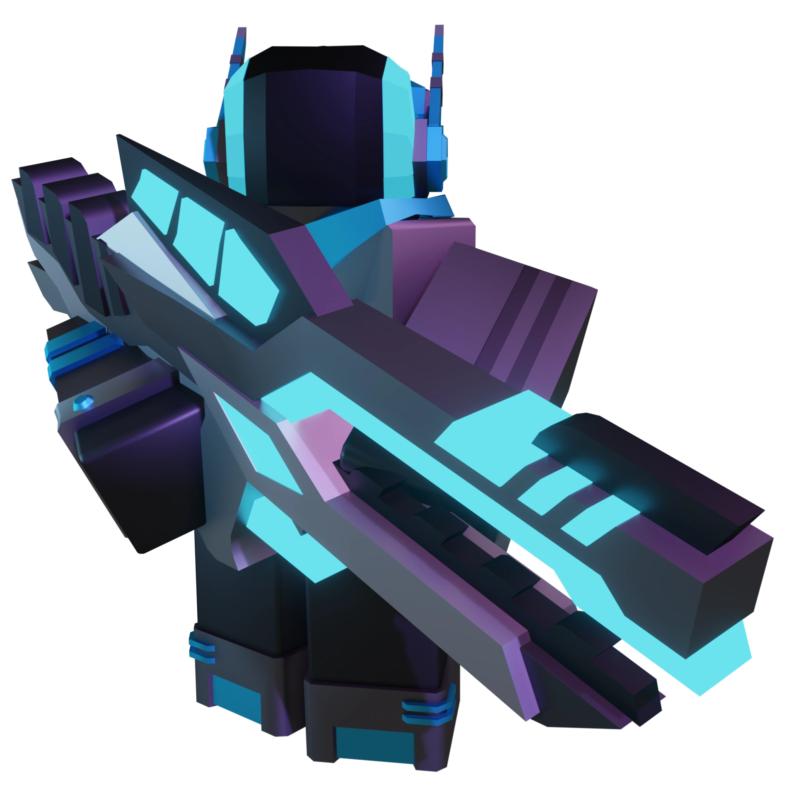
Below is art made by Sodakettle of Hyperlaser.
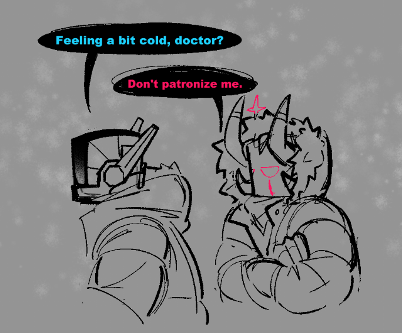
Slingshot is one of the currently 15 Phighters available to play in game.
Slingshot is the owner of the cafe known as Theives Rest. Slingshot runs it with the help of Vinestaff and Shuriken, and he originally came from the Darkage Clan. Slingshot greatly values Shuriken and Vinestaff, even if Shuriken being late annoys him.
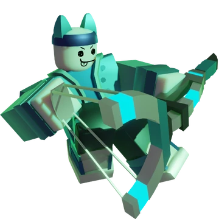
Below is art made by Sodakettle of Slingshot.
Rocket is one of the currently 15 Phighters available to play in game.
Rocket spawned in Playground, and before he lived with Zuka, Rocket ended up blowing himself up with his gear, causing the loss of his arm and his leg. After the incident, Zuka found him and took him in, now living in Crossroads with Zuka. Rocket later met Sword and Medkit in Crossroads, and Medkit made Rocket's prosthetics that he uses today. Rocket makes an appearance in Death In The Family.
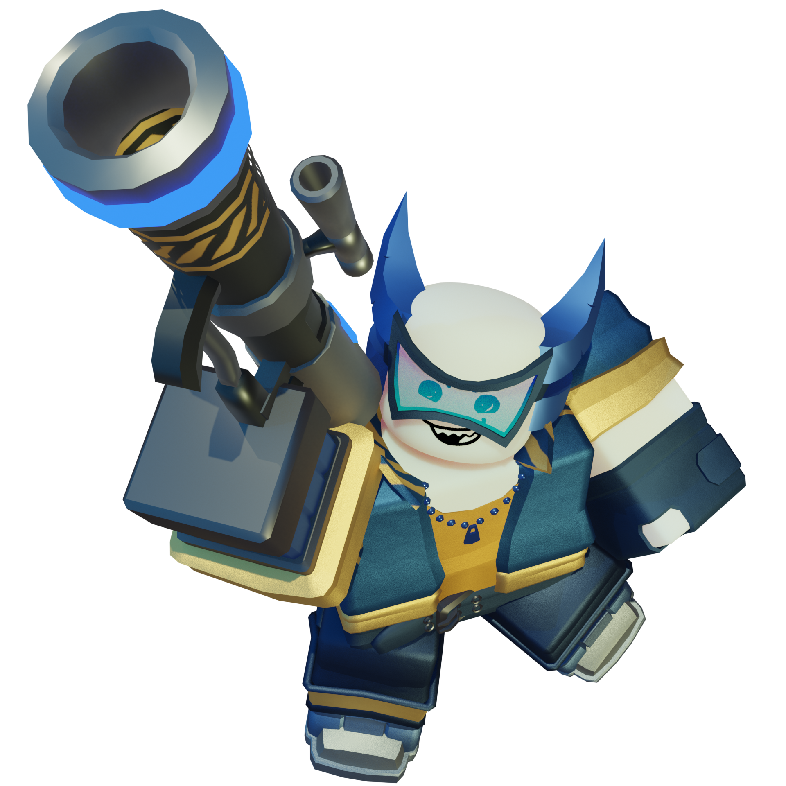
Below is art made by Sodakettle of Rocket.
Coil is one of the currently 15 Phighters available to play in game.
Coil spawned in Playground, part of the Playground trio with Boombox and Skateboard. Coil was raised by Wolf, a character we've not quite fully seen in the art made by Sodakettle. Coil was often called a violent spawn, and his full name is Gravity Coil. Coil can use the other coil gears because he learned how to use crystals from Blackrock to get the Speed and Regen Coils. Coil is also known as the Crystal Criminal by Blackrock, and Coil is part of an underground boxing ring where he meets Punk.
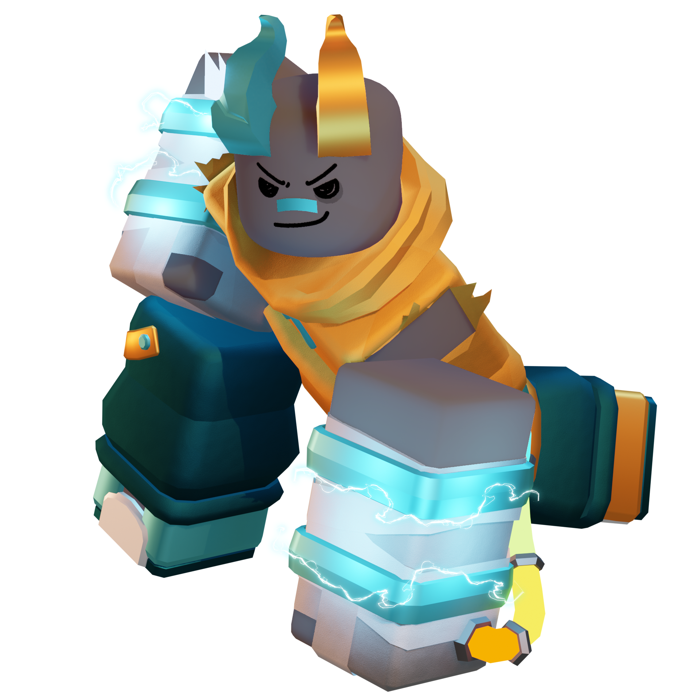
Below is art made by Sodakettle of Coil.
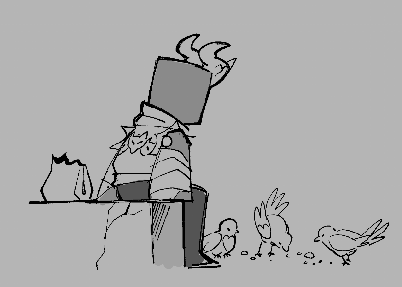
Subspace is one of the currently 15 Phighters available to play in game.
Subspace spawned in Blackrock, and he is often praised for his intellect. Subspace created the Biografts, hence why they refer to him as creator. However, despite Subspace having the brains for Blackrcok and the Korblox Administration, Subspace is rotting. He has a condition simply known as Crystal Rot, and it can spread from just his very breath. So far, the condition has taken much of his body, leaving him to appear malnourished and taking his eye. Subspace must wear his mask when he is with others for their safety.
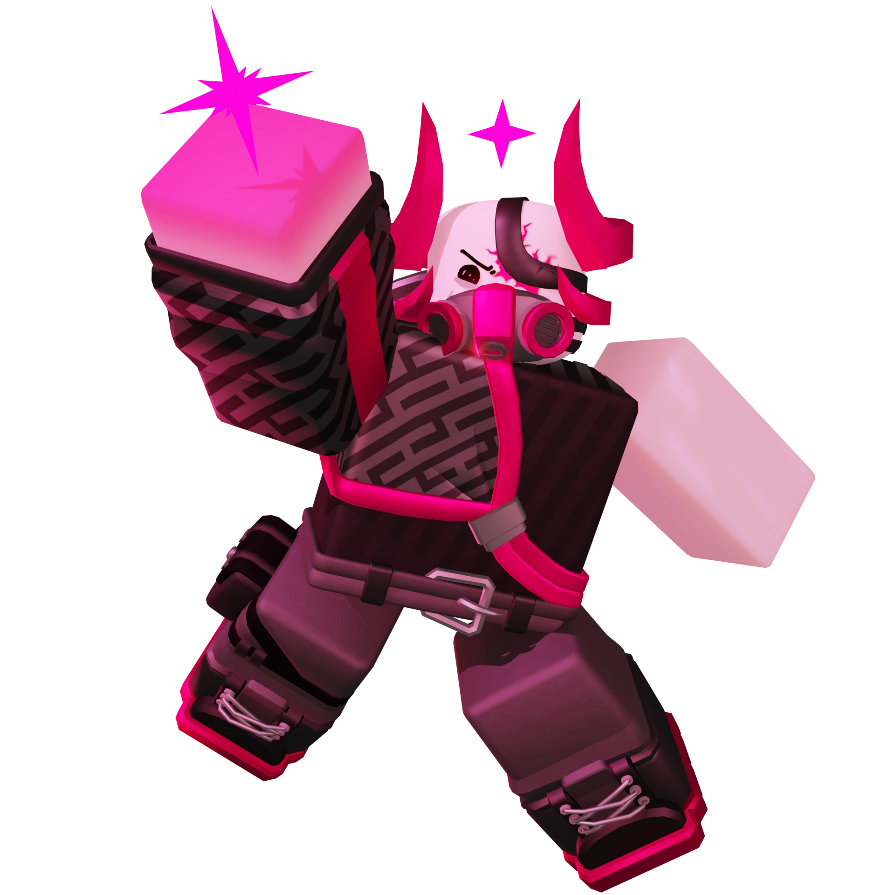
Below is art made by Sodakettle of Subspace.
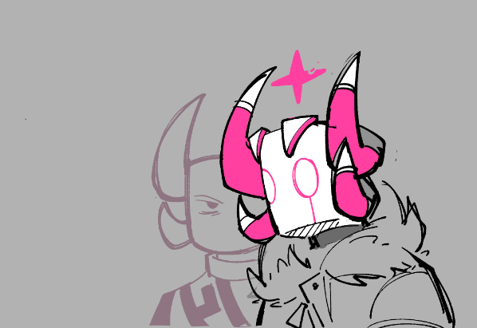
Boombox is one of the currently 15 Phighters available to play in game.
Boombox is from Playground and he is part of the Playground trio with Coil and Skateboard. Boombox
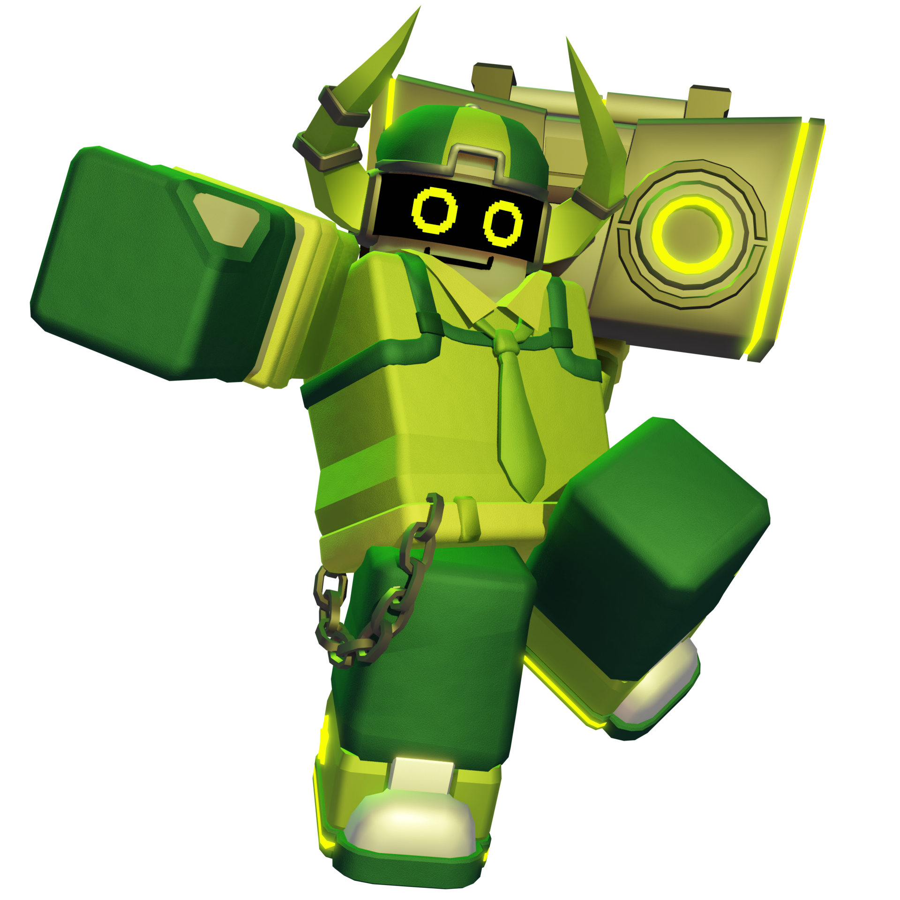
Below is art made by Sodakettle of Boombox.
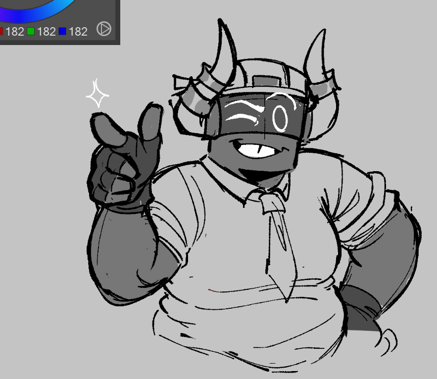
Vinestaff is one of the currently 15 Phighters available to play in game.
Vinestaff is from Theives Den, and she works at Slingshot's cafe known as Theives Rest. Vinestaff was part of the Darkage Clan, but she struggled due to her arm not being flesh. Vinestaff's arm is made of wood, and it is seen as a curse by many. If Vinestaff's wooden arm is harmed, it simply grows back. Vinestaff is also Shuriken's sibling.
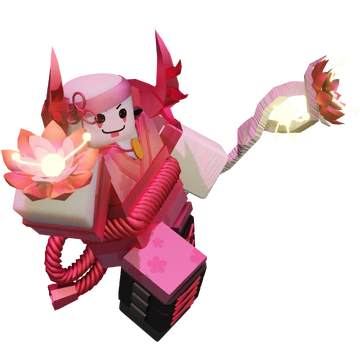
Below is art made by Sodakettle of Vinestaff.
Medkit is one of the currently 15 Phighters available to play in game.
Medkit is originally from Blackrock, he did research with Subspace before he was betrayed, causing him to lose his right eye. Medkit fled to Crossroads when the incident first happened, later joining the Church Of The True Eye for protection from Blackrock and the Banlands. Medkit is a friend of Sword and sees Sword as a younger sibling.
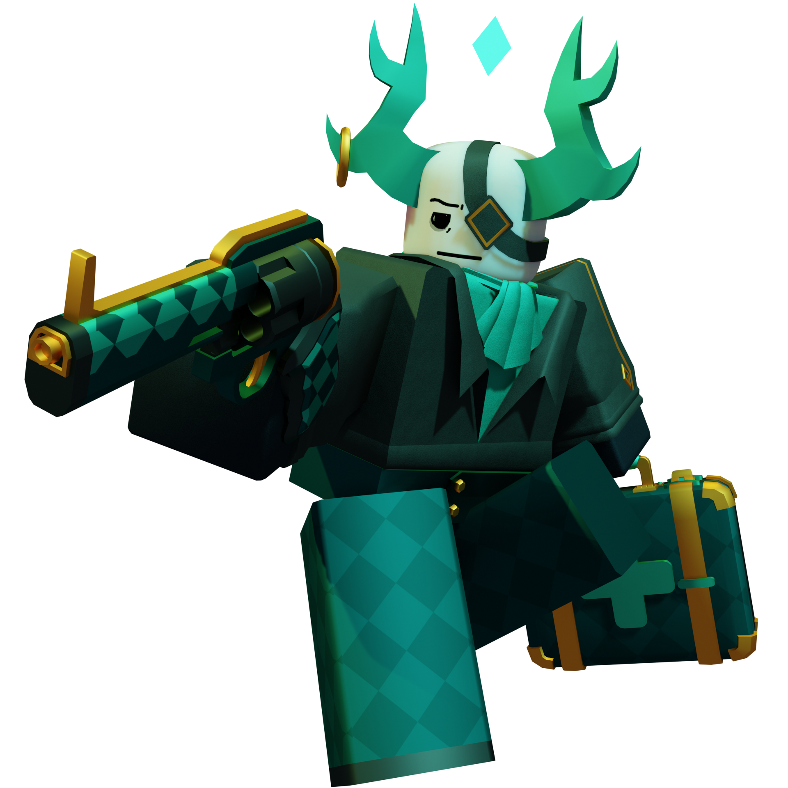
Below is art made by Sodakettle of Medkit.